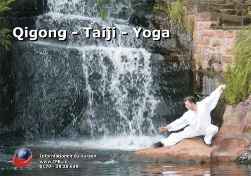

Den Tango trifft sie zunächst einmal über die Musik und den Satz einer argentinischen Freundin und Tänzerin, Maria del Carmen Rozas: "Ich kann dich Tango tanzen sehen, Du solltest den Tango tanzen". In Strümpfen tanzend erfährt Saška 2004 ihre ersten Tangoschritte auf dem Parkett einer berliner Altbauwohnung. Fasziniert von der bildenden Einheit im Tanz, der Geschichten erzählenden Musik und dem perfekten Zusammenspiel zweier Individuen, genießt sie jede Gelegenheit, den Tango und insbesondere ihren Tango näher kennen zu lernen und weiter zu entwickeln. Die intensive Auseinandersetzung im Tanz beginnt mit Fredi Gutzler in Berlin und setzt sich fort mit Gustavo Ariel Colmenarejo, Judith Preuss, Constantin Rüger, Sven Elze und weitere...
Neue Dimensionen des Tangos zeigen sich nach Zusammentreffen mit Tänzern wie Homer Ladas, Pablo Villarraza und Dana Frigoli, die sie mit ihrer feinen und präzisen Technik als wahre Künstler der Improvisation und als neue Kraft der jungen, internationalen Tango Szene beindrucken. Um den Tango auch in Ihre Heimat, gründet sie 2005 mit Freunden und Partnern vorort Adriatango Split. In kollegialer Unterstützung durch Tänzer aus Berlin und Buenos Aires setzt sie die ersten Zeichen der heutigen Spliter Tangoszene. 2006 veranstaltet sie mit Adriatango Split die erste Tangoreise in Zusammenarbeit mit dem Nou Tango aus Berlin und dem Tänzerpaar Homer Ladas aus San Francisko und Gaia Pisauro aus Rom. Bis zum jetzigen Zeitpunkt veranstaltet sie gemeinsam mit ihrem Partner vorort, Željko Bauk, Tangoreisen an der dalmatinischen Küste und genießt die Zusammenarbeit mit Namen wie Susanne Opitz & Rafael Busch (tangotanzenmachtschoen.de - Berlin), Ines Moussavi (tangotanzen.de - Berlin), Eric Jorissen (elcorte.com - Nijmegen), Constantin Rüger (Berlin/Europa), Gaia & Leandro (Berlin/Rom/Buenos Aires), Solange & Gonzalo (tangoscene.com), Ivano & Constanze (layumba.de - Hamburg) und anderen...
Nach ihrem Umzug nach Baden Württemberg trifft sie Andreas Ernst. Schon beim ersten Tanz entsteht die Vision eines gemeinsamen Tangos, welchen Sie nun u.a. im Pforzheimer Ballettcentrum Sterago mit viel Herz und Hingabe weitergeben möchten.
"Ich schätze mich glücklich, weil ich durch den Tango in meinem Leben einen deutlichen Qualitätsunterschied kennen und lieben gelernt habe, sei es in der seelischen, sowie in der körperlichen Haltung. ..."
Organistatorin für
» Tango Reisen
Schon in jungen Jahren begann ich meine Karriere im Hochleistungssport Kunstturnen, entschied mich dann aber für eine klassische Ballett-Ausbildung, bevor mich die Liebe zum Tango Argentino packte und nicht mehr losließ. Im Laufe der Jahre entstand daraus ein eigener, unverwechselbarer Stil - Improvisationstalent und ausgefeilte Technik geben meinem Tanz eine besondere interpretatorische Qualität. Als Mitbegründer des Tango Experimental in Europa konnte ich durch meine körperlichen Vorrausetzungen neue Herausforderungen im Argentinischen Tango entwickeln. Diese neue Stilrichtung stellt hohe Ansprüche an Körperbeherrschung und Balance, und erfordert ein beachtliches technisches Können, das weit über das des klassischen Tango Argentino hinausgeht.
Das Unterrichtskonzept ist auf den Erkenntnissen meiner entwickelten SCR-Methode aufgebaut.
Dieses System bietet die Möglichkeit, dem Tänzer weit mehr als nur Schrittkombinationen zu vermitteln.
Die Grundprinzipien meiner SCR-Methode funktionieren überall und haben sich in der Tanzpraxis bislang hervorragend bewährt.
Es hat sich im Unterricht immer wieder bestätigt, dass die so genannten kleinen Dinge die größte Hebelwirkung haben.
Mehr zur SCR-Methode, siehe unter:
SCR-Methode
Ich kann mit Stolz behaupten, schon einige sehr gute Tangotänzer ausgebildet zu haben von denen einige heute selbst unterrichten.
Mitbegründer der Tango Argentino Tanzschulen in:
Bad Dürkheim - Tangohaus.de
Saarbrücken - JuanTango.de
Saarlouis - Tango-Passito.de
Speyer - Tango-Speyer.de
Gründer des IFK - Institut Für Körperschulung
www.IFK.cc
Ausgebildeter Qigong-Lehrer, Taiji-Lehrer und Yoga-Lehrer.
